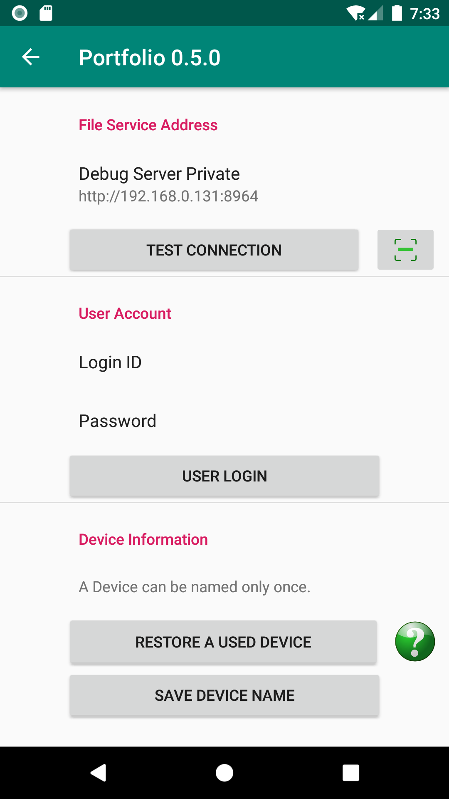

快速入門
前提條件
Portfolio Android 客戶端會把檔案上傳到網域中的任一伺服器，這些伺服器通常作為社群的檔案伺服器部署。服務節點必須已經設定好。
設定 Portfolio Android
伺服器安裝完成且服務啟動後，開啟 Portfolio Android，在設定頁面中設定裝置 ID 和使用者 ID。


設定裝置名稱
Portfolio 使用裝置名稱區分來自不同來源的檔案。使用者必須為裝置取一個在檔案伺服器所在網域中唯一的名稱。
登入
使用伺服器管理員設定的使用者 ID 和密碼登入。登入成功後，請返回主頁。
上傳檔案
在主頁點選 Add ... 按鈕，選擇並上傳檔案。